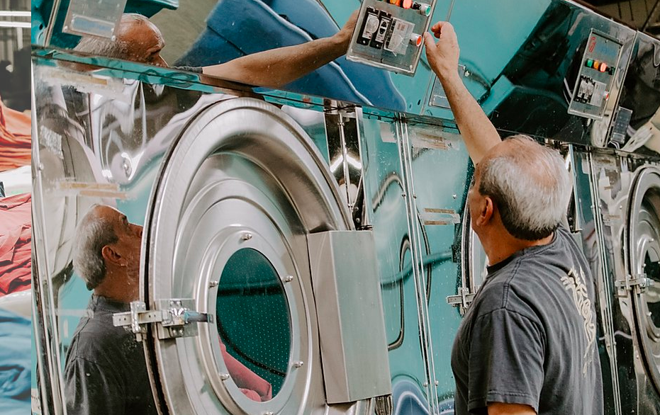

Designers guide
A few things to learn about and how it all works. This will
guide you to understand the fundaments. Here are the
topics coved here. If you like click anything specific.
Unveiling the Magic: How Clothing Manufacturers Like AVmade Bring Your Fashion Dreams to Life
In this article, we will cover the 5 steps in clothing manufacturing, but more importantly, why U.S.-made and why ethical and sustainable practices matter today more than ever. We will also guide you on how to streamline your process to be more efficient and savvy so you can build the next-gen brand. Let's delve into the world of clothing manufacturing, focusing on the value of American-based producers.
5 Essential Steps in Clothing Manufacturing for Startups.
Let's keep it simple. First, you've got to pick the perfect fabric and dye; it's the canvas for everything else. Next comes pattern making, which is basically the blueprint for sampling and clothing manufacturing. Then, it's all about the cut and sew, turning that blueprint into something real. Finally, wrap it all up with the finishing touches that make a garment truly special. This summarizes the early stages in the clothing manufacturing process. In case you're still not sure what this all means, let's go deeper.
1. Fabric Selection
Before you can bring your fashion sketches to life, you've got to pick the right fabric. With AVmade, this means sending us a garment you love so we can reverse engineer the fabric, or requesting a fabric swatch. It's like choosing the canvas for a masterpiece painting. The fabric will dictate not just how the garment looks, but also how it feels, how it drapes, and even how it needs to be cared for.
2. Pattern Making
Pattern making is the step where your designs transform from just an idea to a concrete plan. Think of a pattern as the blueprint tailors and clothing manufacturers like us at AVmade use to cut your chosen fabric into the right shapes before sewing everything together. A master pattern maker is like a conductor leading the orchestra; without him or her, everything is mediocre at best.
Insider Tip:
Don't underestimate the skill needed here. Even tiny mistakes can throw off the fit or look of your garment. So, it's a good idea to either have our development team handle this for you or hire a master pattern-maker.

3. Cut & Sew
This is the stage where the rubber meets the road, or rather, the scissors meet the fabric. Your chosen material is cut according to the patterns we've made, and then sewn together to create the garment.
Insider Tip:
Quality control is crucial at this stage. Ensure that the cutting is precise and the sewing is executed professionally, as this sample will serve as the reference point for future production. The quality of the sample sets the standard, so it's important to get it right.
4. Dyeing
Dyeing is where your fabric gets its personality. Whether it's a vibrant red or a subdued gray, the color needs to match your vision. The method used for dyeing could vary—maybe its garment dyeing or perhaps roll dyeing. Which technique to go with depends on a bunch of factors like the fabric you're using, the style you're aiming for, and the machines that are available.
Insider Tip:
Here at AVmade, we've got a variety of machines and we're super conscious about the planet. So all our dyeing is done with environmentally friendly chemicals and natural ingredients. Eco-friendly dyeing is a big trend right now, so you're not just making a style statement but a planet-friendly one too.
5. Finishing
The finishing stage is about those final touches that can make or break a garment. This includes everything from attaching buttons, zippers, trims and embellishments to ironing or pressing the garment to give it a polished look.
To sum it all up,
These steps are your fashion startup's ABCs. understand them, and you're well on your way to turning your fashion dreams into a wearable reality. And if you're looking for a partner in this journey, AVmade clothing manufacturer can offer invaluable expertise at every step.
Why Choose Clothing Manufacturers in the USA?
In the fashion industry, American clothing manufacturing stands as a beacon of promise. The essence of the 'Made in USA' tag isn't just a geographical stamp; it embodies a commitment to impeccable quality, a thriving local economy, and the future of sustainability.
American manufacturing is synonymous with quality. AVmade’s dedication to craftsmanship and superior quality standards, backed by skilled workforces and state-of-the-art techniques, ensures that apparel we produce is second to none. For our brand partners, this commitment translates to unyielding customer trust, long-lasting relationships and repeat business.
Beyond the tangible fabric and stitches, there's the invaluable heartbeat of the U.S. economy. Every venture into domestic manufacturing is an investment in the nation's economic vitality. It sustains local jobs, nurtures communities, and fuels future innovation. In essence, choosing clothing manufacturers in the USA becomes a brand's tribute to national growth and prosperity.
However, in today's discerning age, quality and agility aren't enough. Modern consumers seek transparency and ethics, and top rated clothing manufacturers like AVmade deliver just that. With rigorous labor laws and a focus on green practices, brands can proudly showcase their apparel, confident in our ethical and sustainable origins. Collaborations with entities like AVmade allow brands to project a narrative of responsibility, appealing to an audience that values ethics as much as aesthetics.
Lastly, the narrative of national pride, craftsmanship, and authenticity is a powerful tool. By aligning with clothing manufacturers in the USA, brands can weave stories that binds consumers with threads of shared heritage and values.
From Coast to Coast: The American Legacy of Apparel Manufacturing
The United States, from its bustling cities to its quiet towns, narrates an age-old tale of apparel manufacturing. With each region bringing its unique essence to the table, America has shaped the contours of global fashion in myriad ways. Here's a panoramic view of our country's contribution to the ever-evolving tapestry of fashion.
LA: Crafting Fashion Narratives
In the City of Angels, fashion isn't just an industry; it's a lifestyle. LA is a mecca where Hollywood glamour and top-tier craftsmanship collide. Thanks to this potent mix, clothing manufacturers in Los Angeles offer brands an unbeatable combination of cutting-edge designs and unparalleled quality.
Let's give credit where it's due: LA's status as America's top apparel manufacturing hub owes a lot to skilled immigrants, particularly from South America, who've brought their artisan craftsmanship to our shores. The result? A whopping 80% of U.S.-made apparel is now crafted right here in LA. While quality can vary, the cream of the crop is definitely in the West. For brands looking to make their mark globally, there's nothing like the LA touch.
NY: Pioneering Global Trends
New York doesn't follow fashion; it creates it. The city's fashion scene, nestled amidst the iconic skyline, has been the cradle of countless fashion revolutions. Whether it's the avant-garde or the timeless classics, NYC sets trend with unmatched flair, setting the pace for the world to follow.
NC: Textiles and Traditions
Rooted deep in American history, North Carolina's textile legacy is emblematic of the nation's industrious spirit. Even as modernity sweeps across, the state's manufacturers haven't lost touch with their roots, merging traditional techniques with sustainable innovations.
SF: The Tech-Fashion Symphony
In San Francisco, silicon meets silk. The city, globally renowned for its technological strides, seamlessly integrates this prowess into its fashion scene. The outcome? Apparel that's not just about looking good but also about smart, sustainable choices.
TX: From Rodeos to Runways
The Lone Star State, synonymous with cowboy lore, has reinvented its fashion narrative. Amidst the vast landscapes, cities like Austin and Dallas are scripting a tale where tradition meets modernity, where cowboy boots stride alongside high-fashion stilettos.
Journeying through these diverse landscapes, one realizes that American apparel manufacturing is a medley of traditions, innovations, and stories. Holding the parade of fashion excellence is
AVmade. As a torchbearer of sustainable and ethical manufacturing in the USA, AVmade's promise isn't just about superior clothing, but about crafting legacies. Dive deeper into our world and ethos at
AVmade.com
Steps to Launching Your Successful Clothing Line with Expert Guidance
Initiating a clothing line can be both an exhilarating and daunting journey. It comes with challenges that require meticulous planning, industry insights, and a dash of creativity. Collaborating with experienced clothing line manufacturers like AVmade can be the game-changer, providing you with unparalleled expertise at every pivotal turn. If you're poised at the starting line of this venture, here's a roadmap to ensure you sprint ahead with confidence.
1. Vision Casting
Your clothing line should be a reflection of a core idea or philosophy. Whether it's bohemian vibes, urban chic, or sustainable choices, crystallize your vision as it will be the anchor for all subsequent decisions.
2. Market Sleuthing
Delve into market studies to gauge the pulse of your audience. Understand gaps, study competitors, and discern trends. It's not about mimicking what's out there but carving a unique niche for your brand.
3. Financial Blueprinting
Fashion is art, but it's also business. Lay out a comprehensive budget, considering everything from production costs to marketing expenses. This blueprint will keep your venture financially viable and profitable.
4. Sketchpad to Sample
Breathe life into your vision through sketches. Refine, iterate, and perfect them. Every line and silhouette should echo your brand's essence.
5. Choosing a Manufacturing Maestro
Teaming up with a seasoned clothing manufacturer like AVmade is pivotal. We offer more than just production. We're partners, providing insights on material, design adaptability, and market feasibility.
6. Prototyping
Before going big, start small. Create prototype garments to understand their real-world appeal, fit, and finish. Feedback at this stage is gold, allowing you to fine-tune before the final plunge.
7. Production
With prototypes greenlit, step into the world of mass production. We ensure consistency, quality, and timely deliveries, keeping your brand promise intact.
8. Building the Buzz
A fantastic product deserves an audience. Craft a magnetic brand narrative, harness digital platforms, and engage influencers. Create a buzz that's both organic and far-reaching.
9. Feedback
Post-launch, listen to the streets. Customer insights, reviews, and feedback are invaluable, steering your brand towards continual evolution and relevance.
10. Horizons Ahead
Dream bigger. Explore product diversification, tap into newer markets, or amplify your online presence. But thats long term. In the short term, keep complete focus on the product you have and grow your market there.
The journey from a dream to a tangible clothing line is filled with twists and turns. But, with a trusted partner like AVmade by your side, it becomes a journey of collaboration, innovation, and success. As more than just
clothing line manufacturers, we're your co-pilots, ensuring every decision, every stitch, and every strategy propels your brand to stellar heights. Embark on this thrilling voyage with
AVmade, and let's co-create fashion legacies. Visit us at
AVmade.com.
Ethics at the Heart of U.S. Production
In a consumer landscape increasingly influenced by the stories behind products, ethical clothing manufacturing is not just an added bonus; it's a necessary cornerstone. As tales of unsustainable practices and unfair labor conditions surface, a brand's commitment to ethical production becomes its defining characteristic. Ethical clothing manufacturing is more than a buzzword—it's a comprehensive approach that marries social responsibility with environmental consciousness.
1. Decoding Ethical
Ethical clothing manufacturing is a two-pronged approach. On one hand, it champions the rights and well-being of every individual in the production chain—ensuring fair wage, safe work environments, and respect. On the other, it's a commitment to the environment—prioritizing sustainable resources and minimizing ecological damage.
2. The Pledge
For AVmade, ethical apparel manufacturing is not just an adjective; it's our core operating principle. We reckon that the true worth of a garment is intertwined with the ethics of its production process.
3. Valuing the Human
The heart and soul of AVmade are its dedicated workers. By ensuring their well-being—both in terms of physical safety and mental satisfaction—we not only adhere to ethical principles but also ensure superior product quality. A contented worker is, after all, a diligent artisan.
4. Treading Lightly
At AVmade, every production decision is filtered through the lens of sustainability. From the fabrics we choose to the methods we employ, the environment isn't just a consideration—it's a priority. Our relentless pursuit is to reduce, reuse, and rethink at every step.
5. The Open-Book Policy
In a world craving authenticity, we offer transparency. By providing a clear view into our production processes, we foster trust and showcase our unwavering commitment to ethical practices.
6. Empowering the Community
Our responsibility doesn't end within the confines of our factory. AVmade actively seeks avenues to uplift and empower the communities we operate in, translating our success into broader societal upliftment.
7. The Ripple Effect
We believe that the wave of ethical manufacturing should sweep across the entire industry. By enlightening our partners about its importance, we hope to create a collective movement where responsible production becomes the norm, not the exception.
In an era where the consumer wields immense power, their choices are increasingly reflecting a desire for meaningful connections with the brands they patronize. AVmade, with our staunch commitment to ethical manufacturing, aims to be more than just a clothing producer. We envision ourselves as pioneers of a movement, stitching together a future where fashion and ethics harmoniously coexist. Join us in this journey towards a conscientious tomorrow. Explore our ethos at
AVmade.com.
American Manufacturing Promise : Craftsmanship and Quality
In the evolving world of fashion, there is one quest that remains steadfast—the pursuit of quality. American manufacturing, a rich tapestry of tradition and ingenuity, continues to be a beacon of this quality commitment. At AVmade, our goal is to ensure that each article of clothing manufactured in the USA is not only worn but cherished.

A Rich Tapestry of Tradition
When it comes to clothing manufactured in the USA, American manufacturing is not just about machines and labor; it's a living legacy. Rooted in a deep history of craftsmanship, our traditional techniques set a high bar for quality in the world of clothing manufacturing. This age-old tradition serves as a guidepost, ensuring that our modern manufacturing practices continue to maintain and elevate this standard.
Attention to Detail
Every clothing manufacturer knows the devil is in the details, and at AVmade, this saying takes on a literal meaning. From the moment we knit the fabric to the time it becomes a finished garment, the journey is filled with rigorous quality checks. These checkpoints ensure that the clothing manufactured withstands wear and tear, retains colors, hand-feel, washability, and maintains the intended fit. In essence, each garment becomes a testament to perfection.
Masters at Work
The true standout feature of clothing manufactured in the USA lies in the artisans behind the scenes. Blending skills passed down through generations with cutting-edge training, they are the stewards of a unique convergence of tradition and trend. At AVmade, our artisans embody this blend, making us a premier clothing manufacturer in the United States.
Pushing Boundaries
Stagnation is not in the American vocabulary, especially when it comes to manufacturing. As a forward-thinking clothing manufacturer, AVmade continually embraces new technologies and innovative techniques. This ensures that while our manufacturing processes evolve to become more efficient, the quality of the clothing manufactured remains uncompromised.
Local Production
Clothing manufacturing in the USA is not a localized industry. It aims for universality, exceeding global standards of quality and sustainability. So, when a garment is manufactured in the USA, it’s not just Americans who notice; the world takes note.
A Two-Way Conversation
We are in the age of real-time reviews and instant customer feedback, and for us at AVmade, that's an opportunity rather than a challenge. This valuable input serves as a fine-tuning tool in our clothing manufacturing process, ensuring that the consumer's desires are always at the forefront of what we do.
Where Quality Meets Responsibility
Quality is not a singular dimension anymore. Sustainability has become the watchword for any responsible clothing manufacturer. American manufacturing, and AVmade in particular, is at the forefront of combining quality with ecological consciousness. The quest for premium clothing manufactured should not, and does not, come at the planet’s expense.
Bridging Brands and Production
The symbiosis between clothing brands and their manufacturers is crucial, particularly when the quality is paramount. At AVmade, we’re not just another clothing manufacturer; we are collaborative partners committed to precisely realizing a brand’s vision. This ensures that the garments manufactured are not just products, but resonating statements of quality and style.
To sum it all up…
In the intricate dance between nuance and style quality remains the timeless tune. U.S. manufacturing, with its unwavering commitment, ensures that this melody continues to enchant. AVmade, deeply rooted in this values, is proud to be a part of this orchestra, orchestrating symphonies of quality and craftsmanship. Dive into our world and our dedication to excellence at
AVmade.com.
The Future of Clothing Manufacturing in the USA: A Visionary Outlook
The terrain of the clothing manufacturing industry is undergoing a seismic transformation. Fueled by technological advancements, sustainability mandates, and a new consumer ethos, these shifts are sparking a revolution. The USA, with its long-standing legacy in clothing manufacturing, is uniquely poised to lead this epochal change. For emerging entrepreneurs and well-established brands, partnering with forward-thinking clothing manufacturers like AVmade is more than a strategy—it’s a roadmap to the future. Here's how the landscape of clothing manufactured in the USA is anticipated to evolve.

Sustainability: From Optional to Obligatory
The trend towards eco-consciousness has evolved into a global mandate. As the world confronts mounting environmental challenges, there's a growing demand for sustainable materials and green manufacturing processes. Progressive clothing manufacturers in the USA are not merely reacting to this change; they are pioneering new standards, pushing the envelope far beyond global benchmarks.
Cutting-Edge Technologies
The fusion of high-tech tools to enhance textile engineering to manufacturing is no longer the stuff of science fiction. From AI and machine learning to 3D printing and augmented reality, the USA's clothing manufacturing sector is at the vanguard of technological disruption. This promises not just innovative clothing manufactured but also garments meticulously crafted to perfection.
Resurgence of 'Made in the USA'
The attraction of the 'Made in the USA' label is experiencing a renaissance. In a world where global logistics are increasingly complex and consumers demand for quality, speed to market, clothing manufactured in the USA offers distinct advantages: speed, quality, and a significantly smaller carbon footprint. This is a recipe for success according to our thesis.
Transparency in Supply Chains
Today's consumers are investing not just in garments but in the narratives behind them. They seek to understand the journey of clothing from raw material to final product. With emerging technologies, clothing manufacturers can provide unprecedented transparency, heralding an era of conscious consumerism.
Ethical Practices as a Brand's Identity
Ethical considerations are not just about ticking boxes; they form the core of a brand’s identity. For the discerning consumer, clothing manufactured ethically holds a unique appeal. Brands that adhere to these practices are poised to resonate with a global audience that prioritizes ethical responsibility.
Brand-Manufacturer Synergy
The traditional divisions between clothing brands and clothing manufacturers are blurring. Collaborative ecosystems are taking shape, where partners like AVmade are not just responsible for clothing manufactured but also play a strategic role in co-creating and co-innovating to shape fashion’s future narratives.
The Imperative of Continuous Learning
In a landscape that is perpetually evolving, stagnation becomes the enemy. Leading clothing manufacturers in the USA are committed to ongoing learning, ensuring that their teams are adept, agile, and equipped to adapt to the fluctuating industry landscape.
As the fabric of clothing manufacturing in the USA is rewoven with threads of innovation, ecological responsibility, and quality excellence, the prospects are not merely bright; they are transformative. With its vision trained on the horizon and its foundations deeply rooted in rich tradition, AVmade is enthusiastic about steering this transformation. Join us in this visionary journey and uncover the future's contours at
AVmade.com.